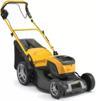
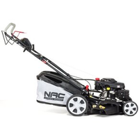
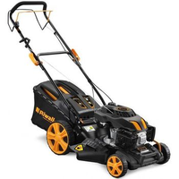

NAJLEPSZE KOSIARKI SPALINOWE NA RYNKU!!!!!!

Kosiarka Stiga
47.47$
Model Collectro 543 o pojemności 123 cm3 wyróżnia się bardzo dużą zwrotnością. Sprzęt ma zaledwie 41 cm szerokości koszenia, zatem idealnie nadaje się do manewrowania.
Dodaj do koszyka

Kosiarka NAC LS53-196
99.99$
Model ten dostępny jest w wariantach 51 oraz 53 cm szerokości, co w połączenia z aż 196 cm3 silnika daje maszynę idealną do koszenia dużych obszarów.
Dodaj do koszyka

Kosiarka Riwall Pro
2999.99$
Potęga w czystej postaci - 7 poziomów koszenia oraz wysoki moment obrotowy. Bestia przeznaczona dla starych wyjadaczy koszenia.
Dodaj do koszyka

Kosiarka Honda AL-KO
60.00$
Zawodnik typu mocarny zwłaszcza w cenie do 60$. Posiada wiele zalet, lecz przede wszystkim jest składana i mieści się do plecaka.
Dodaj do koszyka